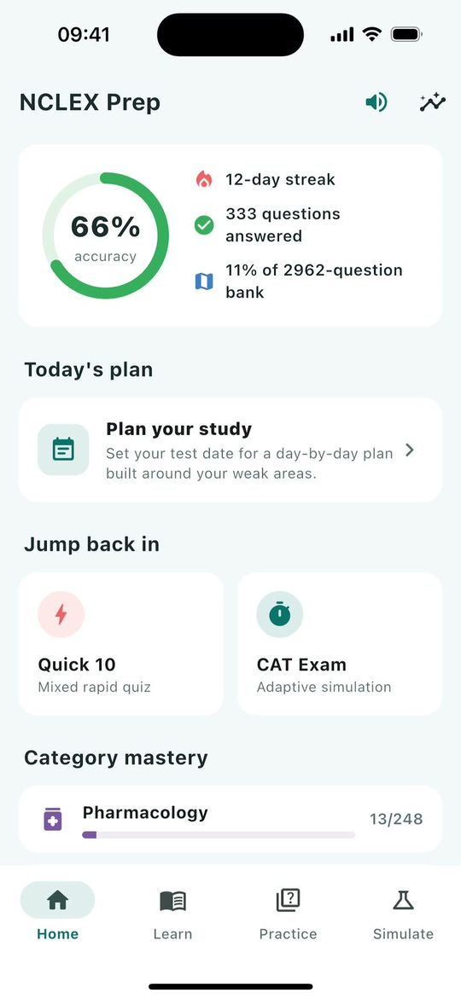
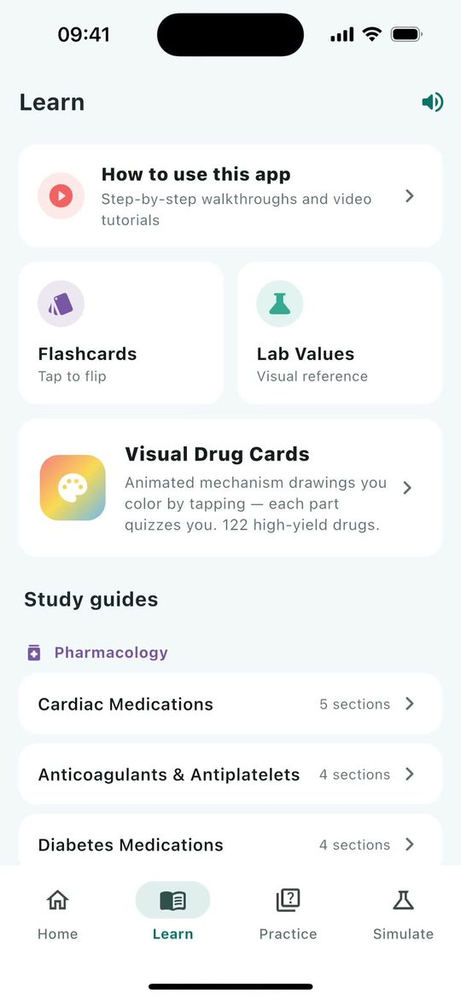
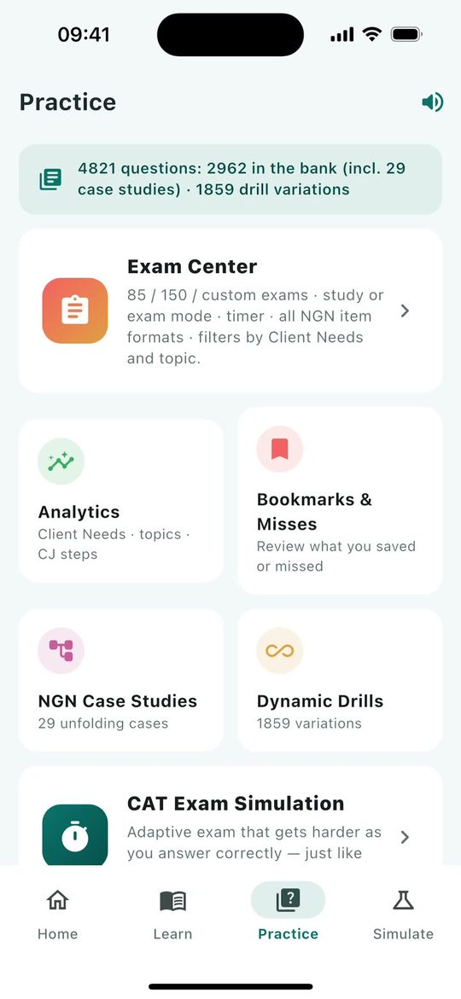
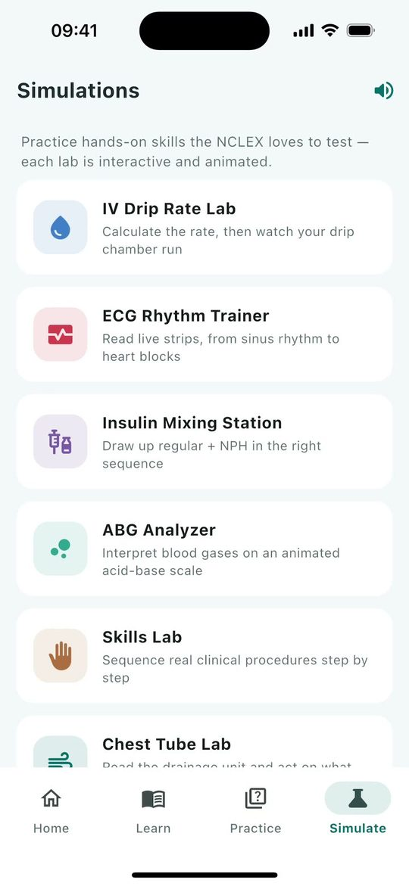

<title>NCLEX Prep User Guide</title>
<meta name="description" content="Video tutorials and a study plan for getting the most from the NCLEX Prep app.">
<link rel="preconnect" href="https://fonts.googleapis.com">
<link rel="preconnect" href="https://fonts.gstatic.com" crossorigin>
<link rel="stylesheet" href="https://fonts.googleapis.com/css2?family=Lexend:wght@400;500;700&family=Bricolage+Grotesque:opsz,wght@12..96,600;12..96,700;12..96,800&display=swap">
<style>
  :root {
    --bg: #f4f8f8;
    --surface: #ffffff;
    --tint: #e4f1f0;
    --ink: #1c2b2d;
    --ink-2: #566a6c;
    --line: #d7e4e4;
    --teal: #00696d;
    --teal-deep: #00494c;
    --on-teal: #ffffff;
    --coral: #e8584a;
    --coral-soft: #ffe5e1;
    --frame: #1c2b2d;
    --grid: rgba(0, 105, 109, 0.07);
    --shadow: 0 1px 2px rgba(28, 43, 45, 0.06), 0 12px 32px rgba(28, 43, 45, 0.08);
    --display: "Bricolage Grotesque", "Avenir Next", "Segoe UI", system-ui, sans-serif;
    --body: "Lexend", system-ui, -apple-system, "Segoe UI", sans-serif;
  }
  @media (prefers-color-scheme: dark) {
    :root:not([data-theme="light"]) {
      --bg: #0e1819;
      --surface: #152324;
      --tint: #19302f;
      --ink: #e4efee;
      --ink-2: #9db2b1;
      --line: #243a3b;
      --teal: #5cc2c2;
      --teal-deep: #8ad6d5;
      --on-teal: #062222;
      --coral: #ff8b7e;
      --coral-soft: #3a2320;
      --frame: #050b0c;
      --grid: rgba(92, 194, 194, 0.07);
      --shadow: 0 1px 2px rgba(0, 0, 0, 0.3), 0 12px 32px rgba(0, 0, 0, 0.35);
    }
  }
  :root[data-theme="dark"] {
    --bg: #0e1819;
    --surface: #152324;
    --tint: #19302f;
    --ink: #e4efee;
    --ink-2: #9db2b1;
    --line: #243a3b;
    --teal: #5cc2c2;
    --teal-deep: #8ad6d5;
    --on-teal: #062222;
    --coral: #ff8b7e;
    --coral-soft: #3a2320;
    --frame: #050b0c;
    --grid: rgba(92, 194, 194, 0.07);
    --shadow: 0 1px 2px rgba(0, 0, 0, 0.3), 0 12px 32px rgba(0, 0, 0, 0.35);
  }

  * { box-sizing: border-box; }
  body {
    background: var(--bg);
    color: var(--ink);
    font-family: var(--body);
    font-size: 16.5px;
    line-height: 1.62;
    padding-inline: 20px;
  }
  .wrap { max-width: 1140px; margin-inline: auto; }
  h1, h2, h3 { font-family: var(--display); text-wrap: balance; line-height: 1.15; margin: 0; }
  h2 { font-size: clamp(1.7rem, 3.2vw, 2.3rem); font-weight: 750; letter-spacing: -0.01em; }
  h3 { font-size: 1.2rem; font-weight: 700; }
  p { margin: 0; }
  a { color: var(--teal); text-underline-offset: 3px; }
  :focus-visible { outline: 3px solid var(--coral); outline-offset: 3px; border-radius: 6px; }
  .eyebrow {
    font-size: 0.78rem; font-weight: 700; letter-spacing: 0.12em; text-transform: uppercase; color: var(--teal);
  }
  .lede { color: var(--ink-2); max-width: 62ch; font-size: 1.08rem; }

  /* Top bar */
  .topbar {
    position: sticky; top: env(safe-area-inset-top, 0px); z-index: 10;
    background: color-mix(in srgb, var(--bg) 88%, transparent);
    backdrop-filter: blur(10px);
    border-bottom: 1px solid var(--line);
    margin-inline: -20px; padding-inline: 20px;
  }
  .topbar .wrap { display: flex; align-items: center; gap: 16px; min-height: 60px; flex-wrap: wrap; }
  .brand { display: flex; align-items: center; gap: 10px; font-weight: 700; text-decoration: none; color: var(--ink); }
  .brand img { width: 32px; height: 32px; border-radius: 8px; }
  .brand small { color: var(--ink-2); font-weight: 500; }
  .topbar nav { margin-left: auto; display: flex; gap: 4px; flex-wrap: wrap; }
  .topbar nav a {
    color: var(--ink-2); text-decoration: none; font-weight: 500; font-size: 0.95rem;
    padding: 6px 12px; border-radius: 999px;
  }
  .topbar nav a:hover { background: var(--tint); color: var(--ink); }

  /* Intro */
  .intro { padding-block: 56px 40px; display: grid; gap: 18px; }
  .intro h1 { font-size: clamp(2.3rem, 5.6vw, 3.9rem); font-weight: 800; letter-spacing: -0.02em; max-width: 16ch; }
  .facts { display: flex; flex-wrap: wrap; gap: 8px 22px; color: var(--ink-2); font-size: 0.98rem; margin-top: 4px; }
  .facts b { color: var(--ink); font-variant-numeric: tabular-nums; }
  .trace { width: 150px; height: 34px; color: var(--coral); }

  section { padding-block: 44px; border-top: 1px solid var(--line); }
  .section-head { display: grid; gap: 10px; margin-bottom: 28px; }

  /* Tabs at a glance */
  .tabs { display: grid; grid-template-columns: repeat(4, minmax(0, 1fr)); gap: 16px; }
  .tab-card { display: grid; gap: 12px; align-content: start; }
  .tab-card figure {
    margin: 0; border-radius: 22px; overflow: hidden; border: 1px solid var(--line);
    background: var(--surface); aspect-ratio: 720 / 1000;
  }
  .tab-card img { width: 100%; height: 100%; object-fit: cover; object-position: top; display: block; }
  .tab-card p { color: var(--ink-2); font-size: 0.98rem; }
  .tab-name { display: flex; align-items: center; gap: 8px; }
  .tab-name span {
    font-size: 0.72rem; font-weight: 700; color: var(--teal); background: var(--tint);
    padding: 2px 8px; border-radius: 999px; letter-spacing: 0.04em;
  }

  /* Tutorial player */
  .player { display: grid; grid-template-columns: 260px auto minmax(0, 1fr); gap: 28px; align-items: start; }
  .player > * { min-width: 0; }
  .picker { display: grid; gap: 6px; position: sticky; top: 84px; }
  .picker button {
    all: unset; box-sizing: border-box; cursor: pointer; display: grid; grid-template-columns: 26px 1fr auto; gap: 10px;
    align-items: center; padding: 10px 12px; border-radius: 14px; color: var(--ink);
  }
  .picker button:hover { background: var(--tint); }
  .picker button[aria-current="true"] { background: var(--teal); color: var(--on-teal); }
  .picker .n {
    width: 26px; height: 26px; border-radius: 50%; display: grid; place-items: center;
    font-size: 0.8rem; font-weight: 700; background: var(--tint); color: var(--teal);
    font-variant-numeric: tabular-nums;
  }
  .picker button[aria-current="true"] .n { background: var(--coral); color: #fff; }
  .picker .t { font-weight: 600; font-size: 0.97rem; line-height: 1.3; }
  .picker .d { font-size: 0.82rem; opacity: 0.75; font-variant-numeric: tabular-nums; }

  .phone {
    width: 340px; aspect-ratio: 720 / 1562; background: #000;
    border: 10px solid var(--frame); border-radius: 44px; overflow: hidden; box-shadow: var(--shadow);
    max-width: min(100%, calc(min(82vh, 740px) * 720 / 1562));
  }
  .phone video { width: 100%; height: 100%; display: block; object-fit: cover; background: #000; }

  .detail { display: grid; gap: 16px; }
  .detail .meta { color: var(--ink-2); font-size: 0.95rem; font-variant-numeric: tabular-nums; }
  .steps { list-style: none; margin: 4px 0 0; padding: 0; display: grid; gap: 4px; }
  .steps button {
    all: unset; cursor: pointer; display: grid; grid-template-columns: 52px 1fr; gap: 12px;
    padding: 10px 12px; border-radius: 12px; width: 100%; box-sizing: border-box;
  }
  .steps button:hover { background: var(--tint); }
  .steps .time { font-size: 0.85rem; color: var(--ink-2); font-variant-numeric: tabular-nums; padding-top: 2px; }
  .steps .title { font-weight: 700; }
  .steps .say { display: none; color: var(--ink-2); font-size: 0.96rem; margin-top: 4px; }
  .steps li.now button { background: var(--coral-soft); }
  .steps li.now .time { color: var(--coral); font-weight: 700; }
  .steps li.now .say { display: block; }
  .hint { font-size: 0.9rem; color: var(--ink-2); }

  /* Offline copy */
  .offline {
    margin-top: 28px; padding: 22px 24px; border-radius: 18px; background: var(--tint);
    display: flex; flex-wrap: wrap; align-items: center; justify-content: space-between; gap: 16px;
  }
  .offline h3 { margin-bottom: 4px; }
  .offline p { color: var(--ink-2); font-size: 0.97rem; max-width: 60ch; }
  .download {
    display: inline-flex; align-items: baseline; gap: 8px; white-space: nowrap;
    background: var(--teal); color: var(--on-teal); text-decoration: none;
    font-weight: 700; padding: 12px 20px; border-radius: 999px;
  }
  .download span { font-weight: 500; opacity: 0.85; font-variant-numeric: tabular-nums; }
  .get { display: grid; gap: 8px; justify-items: center; }
  .address {
    font-size: 0.78rem; color: var(--ink-2); word-break: break-all; max-width: 34ch;
    text-align: center; text-decoration: none;
  }
  .address:hover { color: var(--teal); text-decoration: underline; }
  .download:hover { background: var(--teal-deep); }

  /* Study plan */
  .plan { display: grid; grid-template-columns: repeat(4, minmax(0, 1fr)); gap: 16px; counter-reset: phase; }
  .phase {
    background: var(--surface); border: 1px solid var(--line); border-radius: 18px; padding: 20px;
    display: grid; gap: 12px; align-content: start;
  }
  .phase .when { font-size: 0.8rem; font-weight: 700; letter-spacing: 0.08em; text-transform: uppercase; color: var(--coral); }
  .phase ul { margin: 0; padding-left: 18px; display: grid; gap: 8px; color: var(--ink); font-size: 0.97rem; }
  .routine {
    margin-top: 20px; display: grid; grid-template-columns: minmax(0, 1fr) minmax(0, 2fr); gap: 24px;
    background: var(--tint); border-radius: 18px; padding: 24px;
  }
  .routine ol { margin: 0; padding: 0; list-style: none; display: grid; gap: 10px; }
  .routine li { display: grid; grid-template-columns: 64px 1fr; gap: 12px; }
  .routine .mins { font-weight: 700; color: var(--teal); font-variant-numeric: tabular-nums; }
  .note { color: var(--ink-2); font-size: 0.93rem; margin-top: 14px; }

  /* Scoring */
  .table-wrap { overflow-x: auto; border: 1px solid var(--line); border-radius: 16px; background: var(--surface); }
  table { border-collapse: collapse; width: 100%; min-width: 560px; font-size: 0.97rem; }
  th, td { text-align: left; padding: 12px 16px; border-bottom: 1px solid var(--line); vertical-align: top; }
  th { font-size: 0.78rem; letter-spacing: 0.08em; text-transform: uppercase; color: var(--ink-2); }
  tr:last-child td { border-bottom: 0; }
  td:first-child { font-weight: 700; white-space: nowrap; }

  /* Tips */
  .tips { display: grid; grid-template-columns: repeat(2, minmax(0, 1fr)); gap: 12px 32px; margin: 0; padding: 0; list-style: none; }
  .tips li { display: grid; gap: 4px; padding: 14px 0; border-top: 1px solid var(--line); }
  .tips b { font-weight: 700; }
  .tips span { color: var(--ink-2); }

  footer { padding-block: 32px 48px; color: var(--ink-2); font-size: 0.9rem; border-top: 1px solid var(--line); }

  @media (max-width: 1000px) {
    .player { grid-template-columns: auto minmax(0, 1fr); }
    .picker { grid-column: 1 / -1; position: static; grid-auto-flow: column; grid-auto-columns: minmax(220px, 1fr); overflow-x: auto; padding-bottom: 6px; }
    .tabs, .plan { grid-template-columns: repeat(2, minmax(0, 1fr)); }
  }
  @media (max-width: 680px) {
    body { font-size: 16px; }
    .player { grid-template-columns: minmax(0, 1fr); }
    .phone { justify-self: center; }
    .routine { grid-template-columns: minmax(0, 1fr); }
    .tips { grid-template-columns: minmax(0, 1fr); }
    .topbar nav { margin-left: 0; width: 100%; flex-wrap: nowrap; overflow-x: auto; padding-bottom: 8px; }
    .topbar nav a { white-space: nowrap; }
  }
  @media (max-width: 460px) {
    .tabs, .plan { grid-template-columns: minmax(0, 1fr); }
  }
  @media (prefers-reduced-motion: reduce) {
    * { scroll-behavior: auto !important; transition: none !important; }
  }
</style>

<header class="topbar">
  <div class="wrap">
    <a class="brand" href="#top"> NCLEX Prep <small>User guide</small></a>
    <nav aria-label="Sections">
      <a href="#tabs">The app</a>
      <a href="#tutorials">Video tutorials</a>
      <a href="#plan">Study plan</a>
      <a href="#scoring">Scoring</a>
      <a href="#tips">Good to know</a>
    </nav>
  </div>
</header>

<main class="wrap" id="top">
  <div class="intro">
    <svg class="trace" viewBox="0 0 150 34" aria-hidden="true">
      <polyline points="0,20 34,20 42,6 50,20 64,20 76,30 104,4" fill="none" stroke="currentColor" stroke-width="4" stroke-linecap="round" stroke-linejoin="round"/>
    </svg>
    <h1>Get the most from NCLEX Prep</h1>
    <p class="lede">Short video tutorials show every part of the app in action, from planning your study to full adaptive exams. Below them is how the app's study plan carries you, phase by phase, up to test day.</p>
    <p class="facts"><span><b>2,962</b> practice questions</span><span><b>29</b> case studies</span><span><b>122</b> visual drug cards</span><span><b>9</b> simulation labs</span><span><b>12</b> video tutorials</span></p>
  </div>

  <section id="tabs" aria-labelledby="tabs-h">
    <div class="section-head">
      <p class="eyebrow">The app at a glance</p>
      <h2 id="tabs-h">Four tabs, one job each</h2>
      <p class="lede">Everything lives under the four tabs along the bottom of the screen. If you're ever lost, come back to one of these.</p>
    </div>
    <div class="tabs">
      <article class="tab-card">
        <figure></figure>
        <h3 class="tab-name">Home <span>Dashboard</span></h3>
        <p>Your accuracy, study streak, today's tasks from your study plan and mastery in each subject. Start a Quick 10 or a CAT exam in one tap.</p>
      </article>
      <article class="tab-card">
        <figure></figure>
        <h3 class="tab-name">Learn <span>Study</span></h3>
        <p>Flashcards, a lab values reference, visual drug cards with animated mechanisms, and study guides by subject.</p>
      </article>
      <article class="tab-card">
        <figure></figure>
        <h3 class="tab-name">Practice <span>Test yourself</span></h3>
        <p>The Exam Center, your analytics, Next Gen case studies, calculation drills and practice by category.</p>
      </article>
      <article class="tab-card">
        <figure></figure>
        <h3 class="tab-name">Simulate <span>Hands-on</span></h3>
        <p>Nine animated labs: IV drips, ECG rhythms, insulin mixing, blood gases, procedures, chest tubes, fetal monitoring, triage and hypoglycemia.</p>
      </article>
    </div>
  </section>

  <section id="tutorials" aria-labelledby="tut-h">
    <div class="section-head">
      <p class="eyebrow">Video tutorials</p>
      <h2 id="tut-h">Watch it done, then do it yourself</h2>
      <p class="lede">Each tutorial is recorded from the app itself, with narration. Pick one, or tap any step to jump straight to that part.</p>
    </div>
    <div class="player">
      <div class="picker" role="list" id="picker"></div>
      <div class="phone">
        <video id="video" controls playsinline preload="metadata"></video>
      </div>
      <div class="detail" aria-live="polite">
        <p class="eyebrow" id="tut-num"></p>
        <h3 id="tut-title" style="font-size: clamp(1.5rem, 2.6vw, 2rem)"></h3>
        <p class="lede" id="tut-summary"></p>
        <p class="meta" id="tut-meta"></p>
        <ol class="steps" id="steps"></ol>
        <p class="hint">Captions are available from the video's controls. The progress numbers in these videos come from a sample study history.</p>
      </div>
    </div>
    <div class="offline">
      <div>
        <h3>Keep the whole guide offline</h3>
        <p>All 12 tutorials as one film, 17 minutes, with a chapter marker for each one. Save it to a phone or laptop and watch without a connection.</p>
      </div>
      <div class="get">
        <a class="download" href="https://oluyemi-1.github.io/nclex-prep-guide/nclex-prep-guide.mp4" download>Download the film <span>38 MB</span></a>
        <!-- Some viewers block a download link, so the plain address is a link too. -->
        <a class="address" href="https://oluyemi-1.github.io/nclex-prep-guide/nclex-prep-guide.mp4" target="_blank" rel="noopener">https://oluyemi-1.github.io/nclex-prep-guide/nclex-prep-guide.mp4</a>
      </div>
    </div>
  </section>

  <section id="plan" aria-labelledby="plan-h">
    <div class="section-head">
      <p class="eyebrow">Your study plan</p>
      <h2 id="plan-h">A plan built from your test date</h2>
      <p class="lede">Set your test date under Today's plan on the Home tab, and the app lays out every day until your exam in four phases, in this order. It rebuilds the plan each morning from what you've done, so a missed day never piles up.</p>
    </div>
    <div class="plan">
      <article class="phase">
        <p class="when">First day or two</p>
        <h3>Find your baseline</h3>
        <ul>
          <li>If you're new, 85 mixed questions in Study mode, over one or two days.</li>
          <li>Read every rationale, then open Analytics to see your weakest Client Needs areas.</li>
        </ul>
      </article>
      <article class="phase">
        <p class="when">About half your time</p>
        <h3>Build where you're weak</h3>
        <ul>
          <li>Each day's questions focus on one Client Needs area. The most heavily tested and your weakest areas come up most often.</li>
          <li>Alongside: drug cards, a case study, calculation drills or a simulation lab.</li>
          <li>Enough questions a day to cover the whole bank, between 25 and 75.</li>
        </ul>
      </article>
      <article class="phase">
        <p class="when">The weeks before</p>
        <h3>Practice like test day</h3>
        <ul>
          <li>Timed 85-question exams in Exam mode, each followed by a review day.</li>
          <li>Weak-area practice and mixed sets with the answers hidden until you finish.</li>
          <li>An adaptive exam about once a week.</li>
        </ul>
      </article>
      <article class="phase">
        <p class="when">Final week</p>
        <h3>Sharpen and rest</h3>
        <ul>
          <li>One 150-question adaptive exam under the five-hour timer.</li>
          <li>Review your misses, then keep to Quick 10s and flashcards.</li>
          <li>Rest the day before your exam.</li>
        </ul>
      </article>
    </div>
    <div class="routine">
      <div>
        <h3>Short on time? A 30-minute routine</h3>
        <p class="note">On a day you can't follow the plan, a short session still counts, and it keeps your streak alive.</p>
      </div>
      <ol>
        <li><span class="mins">5 min</span><span>Quick 10 on the Home tab.</span></li>
        <li><span class="mins">10 min</span><span>Drug cards or flashcards for today's body system.</span></li>
        <li><span class="mins">10 min</span><span>Practice weak areas, or one case study.</span></li>
        <li><span class="mins">5 min</span><span>Reread the rationale for everything you missed.</span></li>
      </ol>
    </div>
    <p class="note">The app treats 70% overall accuracy as a reasonable readiness signal, and adaptive exams tell you whether you're above or below the passing standard. Both are practice benchmarks, not a prediction of your NCLEX result.</p>
  </section>

  <section id="scoring" aria-labelledby="score-h">
    <div class="section-head">
      <p class="eyebrow">How scoring works</p>
      <h2 id="score-h">Partial credit, like the real exam</h2>
      <p class="lede">Next Gen questions give partial credit, so a question can earn some of its points. The rationale card shows your points for each question.</p>
    </div>
    <div class="table-wrap">
      <table>
        <thead><tr><th>Question format</th><th>How to answer</th><th>Points</th></tr></thead>
        <tbody>
          <tr><td>Multiple choice</td><td>Tap one option.</td><td>1 point, all or nothing.</td></tr>
          <tr><td>Select all that apply</td><td>Tap every correct option.</td><td>+1 for each right pick, −1 for each wrong pick, never below 0.</td></tr>
          <tr><td>Ordered response</td><td>Press and hold a row, then drag it into place.</td><td>1 point for each step in the right position.</td></tr>
          <tr><td>Calculation</td><td>Type the number, following the rounding instruction.</td><td>1 point.</td></tr>
          <tr><td>Matrix / grid</td><td>Tap one cell in every row.</td><td>1 point per correct row.</td></tr>
          <tr><td>Bow-tie</td><td>Pick 1 condition, 2 actions and 2 parameters to monitor.</td><td>5 points: one for each correct pick.</td></tr>
          <tr><td>Drop-down (cloze)</td><td>Tap each Select box and choose the option that completes the sentence.</td><td>1 point per blank.</td></tr>
          <tr><td>Highlight</td><td>Tap the parts of the text that matter.</td><td>+1 for each right highlight, −1 for each wrong one, never below 0.</td></tr>
          <tr><td>Trend</td><td>Read the table over time, then answer.</td><td>Like multiple choice, or like select all when several answers are right.</td></tr>
        </tbody>
      </table>
    </div>
  </section>

  <section id="tips" aria-labelledby="tips-h">
    <div class="section-head">
      <p class="eyebrow">Good to know</p>
      <h2 id="tips-h">Small things that save frustration</h2>
    </div>
    <ul class="tips">
      <li><b>Back up your progress.</b><span>Your progress lives on your phone. Now and then, open Your Progress and tap Save backup, and keep the file somewhere off the phone, such as Google Drive. Restore adds a backup to what's already there, so nothing is lost.</span></li>
      <li><b>Watch your pace.</b><span>Analytics shows your usual time per question. The real exam allows about two minutes each, and fast wrong answers are a sign to slow down.</span></li>
      <li><b>Figures talk.</b><span>Tap any part of a figure under a rationale, such as a lab range or a table row, to hear it read aloud.</span></li>
      <li><b>Submit before you move on.</b><span>In Study mode, if you move to another question before submitting, your answer is cleared.</span></li>
      <li><b>Submit exam ends it straight away.</b><span>On the last question of an exam, Submit exam finishes immediately, with no confirmation.</span></li>
      <li><b>Unfinished sessions wait under Resume.</b><span>Leave any session with the back arrow and pick it up later in the Exam Center. The bin icon deletes a session immediately, and it can't be undone.</span></li>
      <li><b>Ordered response needs a long press.</b><span>Press and hold a row until it lifts, then drag it.</span></li>
      <li><b>Keep the voice guide on in some labs.</b><span>In the ECG, Chest Tube and Hypoglycemia labs, the explanation after you answer is spoken, not shown on screen.</span></li>
      <li><b>Two kinds of adaptive exam.</b><span>CAT Exam on the Home tab is a quick 20 to 75 questions with rationales as you go, but it isn't saved to your history. For a saved, full-length adaptive exam, use Exam Center, then Exam mode, then Adaptive.</span></li>
      <li><b>Bookmarks &amp; Misses starts with your misses.</b><span>It opens the Exam Center with Previously incorrect selected. Switch the question pool to Bookmarked for the questions you saved.</span></li>
      <li><b>The timer is real.</b><span>In Exam mode with the timer on, the exam submits itself when time runs out.</span></li>
      <li><b>Earning the Skills Lab badge.</b><span>Finish three procedures in one visit, and leave each one with Back to Skills Lab.</span></li>
      <li><b>Drills never run out.</b><span>Dynamic Drills change the numbers every time. Use the back arrow when you're done.</span></li>
    </ul>
  </section>
</main>

<footer>
  <div class="wrap">NCLEX Prep user guide. All questions, cards and simulations in the app are original study material.</div>
</footer>

<script>
  const TUTORIALS = [{"id": "tour", "title": "Find your way around", "summary": "The four tabs, your dashboard, and the voice guide.", "seconds": 103.5, "video": "videos/tour.mp4", "poster": "posters/tour.jpg", "cues": [[2.65, 4.343, "Welcome to NCLEX Prep."], [4.343, 12.959, "Everything in the app lives under four tabs along the bottom of the screen: Home, Learn, Practice and Simulate."], [13.499, 15.06, "Home is your dashboard."], [15.06, 17.638, "The ring shows your overall accuracy."], [17.638, 25.712, "Beside it are your study streak, how many questions you've answered, and how much of the question bank you've covered."], [26.21, 28.142, "Below it is Today's plan."], [28.142, 35.021, "Set your test date there, and the app builds a study plan for every day until your exam."], [35.021, 37.262, "The next tutorial shows how."], [37.789, 40.379, "Scroll down to Category mastery."], [40.379, 44.749, "Each bar tracks your correct answers in that subject."], [44.749, 49.12, "Tap any category for a quick ten-question quiz on it."], [49.632, 56.087, "The chart icon at the top opens Your Progress, with your score trend and your recent sessions."], [56.598, 60.948, "Further down, save a backup of everything you've done to a file."], [60.948, 66.861, "If you change phones or reinstall the app, restore it and carry on where you left off."], [67.391, 74.774, "The Learn tab is for studying: flashcards, lab values, visual drug cards and study guides."], [75.296, 83.005, "The Practice tab is where you test yourself, from the Exam Center and your analytics to case studies and drills."], [83.515, 90.573, "Simulate holds nine animated labs for hands-on skills, like reading heart rhythms and blood gases."], [91.122, 95.924, "Finally, the speaker at the top of each tab is the voice guide."], [95.924, 100.192, "It reads questions and explanations aloud as you study."], [100.192, 102.174, "Tap it to mute or unmute."]], "steps": [{"title": "Welcome to NCLEX Prep", "say": "Welcome to NCLEX Prep. Everything in the app lives under four tabs along the bottom of the screen: Home, Learn, Practice and Simulate.", "at": 2.65}, {"title": "Your dashboard", "say": "Home is your dashboard. The ring shows your overall accuracy. Beside it are your study streak, how many questions you've answered, and how much of the question bank you've covered.", "at": 13.5}, {"title": "Today's plan", "say": "Below it is Today's plan. Set your test date there, and the app builds a study plan for every day until your exam. The next tutorial shows how.", "at": 26.21}, {"title": "Category mastery", "say": "Scroll down to Category mastery. Each bar tracks your correct answers in that subject. Tap any category for a quick ten-question quiz on it.", "at": 37.79}, {"title": "Your progress", "say": "The chart icon at the top opens Your Progress, with your score trend and your recent sessions.", "at": 49.63}, {"title": "Back up your progress", "say": "Further down, save a backup of everything you've done to a file. If you change phones or reinstall the app, restore it and carry on where you left off.", "at": 56.6}, {"title": "The Learn tab", "say": "The Learn tab is for studying: flashcards, lab values, visual drug cards and study guides.", "at": 67.39}, {"title": "The Practice tab", "say": "The Practice tab is where you test yourself, from the Exam Center and your analytics to case studies and drills.", "at": 75.3}, {"title": "The Simulate tab", "say": "Simulate holds nine animated labs for hands-on skills, like reading heart rhythms and blood gases.", "at": 83.52}, {"title": "The voice guide", "say": "Finally, the speaker at the top of each tab is the voice guide. It reads questions and explanations aloud as you study. Tap it to mute or unmute.", "at": 91.12}]}, {"id": "plan", "title": "Plan your study", "summary": "Set your test date and follow a day-by-day plan built around your weak areas.", "seconds": 80.4, "video": "videos/plan.mp4", "poster": "posters/plan.jpg", "cues": [[2.65, 4.223, "Start on the Home tab."], [4.223, 7.154, "Under Today's plan, tap Plan your study."], [7.673, 9.437, "Tap Set your test date."], [10.667, 15.682, "Tap the date, pick your exam day from the calendar, and tap OK."], [17.531, 19.7, "Then choose the days you study."], [19.7, 22.639, "Any day you leave out becomes a rest day."], [23.151, 32.346, "Tap Save plan, and your plan appears: your test date, the days left, and about how many questions to answer on each study day."], [32.876, 35.241, "The colored bar shows the phases."], [35.241, 39.683, "First you build your weak areas, one Client Needs area a day."], [39.683, 42.621, "Then you practice under exam conditions."], [42.621, 48.712, "The final week is lighter, with a full adaptive exam and a rest day before the test."], [49.253, 51.151, "Today's tasks come first."], [51.151, 52.745, "Tap one to start it."], [52.745, 58.819, "Question tasks tick themselves off as you answer; tick the others off yourself."], [59.333, 62.202, "Scroll to see every day until your exam."], [62.202, 68.156, "The plan adjusts each morning to what you've done, so a missed day never piles up."], [68.692, 74.543, "Back on Home, Today's plan counts down to your exam and lists today's tasks."], [75.068, 76.564, "Tap a task to begin."], [76.564, 79.108, "This one opens today's questions."]], "steps": [{"title": "Plan your study", "say": "Start on the Home tab. Under Today's plan, tap Plan your study.", "at": 2.65}, {"title": "Set your test date", "say": "Tap Set your test date.", "at": 7.67}, {"title": "Pick the date", "say": "Tap the date, pick your exam day from the calendar, and tap OK.", "at": 10.67}, {"title": "Choose your study days", "say": "Then choose the days you study. Any day you leave out becomes a rest day.", "at": 17.53}, {"title": "Save your plan", "say": "Tap Save plan, and your plan appears: your test date, the days left, and about how many questions to answer on each study day.", "at": 23.15}, {"title": "Four phases", "say": "The colored bar shows the phases. First you build your weak areas, one Client Needs area a day. Then you practice under exam conditions. The final week is lighter, with a full adaptive exam and a rest day before the test.", "at": 32.88}, {"title": "Today's tasks", "say": "Today's tasks come first. Tap one to start it. Question tasks tick themselves off as you answer; tick the others off yourself.", "at": 49.25}, {"title": "Every day ahead", "say": "Scroll to see every day until your exam. The plan adjusts each morning to what you've done, so a missed day never piles up.", "at": 59.33}, {"title": "Back on Home", "say": "Back on Home, Today's plan counts down to your exam and lists today's tasks.", "at": 68.69}, {"title": "Start a task", "say": "Tap a task to begin. This one opens today's questions.", "at": 75.07}]}, {"id": "quiz", "title": "Answer your first questions", "summary": "Start a quick quiz, check your answer, and learn from the rationale.", "seconds": 65.5, "video": "videos/quiz.mp4", "poster": "posters/quiz.jpg", "cues": [[2.65, 6.099, "The fastest way to start is Quick 10 on the Home tab."], [6.099, 12.866, "It gives you ten mixed questions in study mode, where you see the rationale straight after each answer."], [13.384, 17.155, "The label above each question tells you how to answer it."], [17.155, 20.86, "The speaker button next to it reads the question aloud."], [21.364, 23.918, "Choose your answer, then tap Submit."], [25.731, 27.137, "Green means correct."], [27.137, 29.458, "Read the rationale to learn why."], [29.458, 35.576, "This is where most of your learning happens, so don't skip it, even when you're right."], [36.083, 39.493, "Tap the bookmark icon to save a question for later."], [39.493, 41.098, "Then tap Next question."], [41.614, 44.113, "Answer the next question the same way."], [44.113, 49.044, "Questions with several parts earn partial credit, just like the real exam."], [55.031, 58.503, "You can leave with the back arrow whenever you like."], [58.503, 64.179, "Your session is saved, and you can pick it up later under Resume in the Exam Center."]], "steps": [{"title": "Start Quick 10", "say": "The fastest way to start is Quick 10 on the Home tab. It gives you ten mixed questions in study mode, where you see the rationale straight after each answer.", "at": 2.65}, {"title": "Read the instruction", "say": "The label above each question tells you how to answer it. The speaker button next to it reads the question aloud.", "at": 13.38}, {"title": "Answer, then Submit", "say": "Choose your answer, then tap Submit.", "at": 21.36}, {"title": "Read the rationale", "say": "Green means correct. Read the rationale to learn why. This is where most of your learning happens, so don't skip it, even when you're right.", "at": 25.73}, {"title": "Bookmark and move on", "say": "Tap the bookmark icon to save a question for later. Then tap Next question.", "at": 36.08}, {"title": "Keep going", "say": "Answer the next question the same way. Questions with several parts earn partial credit, just like the real exam.", "at": 41.61}, {"title": "Pause any time", "say": "You can leave with the back arrow whenever you like. Your session is saved, and you can pick it up later under Resume in the Exam Center.", "at": 55.03}]}, {"id": "figures", "title": "Figures that explain the answer", "summary": "See the lab ranges, tables and drug drawings that come with the rationales.", "seconds": 64.4, "video": "videos/figures.mp4", "poster": "posters/figures.jpg", "cues": [[2.65, 7.75, "Many rationales come with a figure that explains the idea at a glance."], [7.75, 11.102, "Let's open a practice set in the Exam Center."], [11.612, 14.444, "Answer the question and submit it, as usual."], [15.879, 18.292, "Below the rationale is a figure."], [18.292, 24.702, "This one shows where serum potassium becomes dangerous, whether it runs low or high."], [25.213, 28.949, "Tap any part of a figure to hear it read aloud."], [28.949, 33.479, "Tapping the high zone explains its signs and what to do."], [33.995, 36.224, "Now the next question, about heparin."], [40.412, 42.162, "Some figures are tables."], [42.162, 47.703, "This one pairs each anticoagulant with its lab test and its reversal agent."], [48.213, 52.661, "When a question names a drug, its animated mechanism appears too."], [52.661, 56.014, "Tap a part of the drawing to learn what it does."], [57.413, 62.057, "And Open the Heparin card takes you straight to the full drug card."]], "steps": [{"title": "Open the practice set", "say": "Many rationales come with a figure that explains the idea at a glance. Let's open a practice set in the Exam Center.", "at": 2.65}, {"title": "Answer the question", "say": "Answer the question and submit it, as usual.", "at": 11.61}, {"title": "A figure under the rationale", "say": "Below the rationale is a figure. This one shows where serum potassium becomes dangerous, whether it runs low or high.", "at": 15.88}, {"title": "Tap to hear more", "say": "Tap any part of a figure to hear it read aloud. Tapping the high zone explains its signs and what to do.", "at": 25.21}, {"title": "The next question", "say": "Now the next question, about heparin.", "at": 33.99}, {"title": "Tables compare", "say": "Some figures are tables. This one pairs each anticoagulant with its lab test and its reversal agent.", "at": 40.41}, {"title": "Drug mechanisms", "say": "When a question names a drug, its animated mechanism appears too. Tap a part of the drawing to learn what it does.", "at": 48.21}, {"title": "Open the drug card", "say": "And Open the Heparin card takes you straight to the full drug card.", "at": 57.41}]}, {"id": "formats", "title": "Every question format", "summary": "How to answer multiple choice, select all, ordering, calculations, and every Next Gen format.", "seconds": 141.5, "video": "videos/formats.mp4", "poster": "posters/formats.jpg", "cues": [[2.65, 5.513, "Let's walk through every question format."], [5.513, 8.516, "On the Practice tab, open the Exam Center."], [8.516, 11.798, "Unfinished sessions wait for you under Resume."], [12.32, 15.71, "Tap a session to continue it where you left off."], [16.215, 19.682, "Multiple choice asks for the single best answer."], [19.682, 22.066, "Tap one option, then tap Submit."], [22.586, 26.413, "Select all that apply can have several right answers."], [26.413, 28.29, "Tap every correct option."], [28.29, 33.127, "Each right pick earns a point, and each wrong pick takes one away."], [34.25, 39.001, "For ordered response, press and hold a row, then drag it into place."], [39.001, 42.005, "Put every step in order before you submit."], [47.6, 50.498, "Calculation questions ask you to type a number."], [50.498, 54.937, "Check the rounding instruction in the question, then enter your answer."], [56.865, 59.687, "A matrix needs one choice in every row."], [59.687, 63.738, "For each client, tap the cell under the correct column."], [73.567, 75.42, "A bow-tie has three parts."], [75.42, 83.83, "Choose the condition the client is most likely experiencing, then two actions to take, and two parameters to monitor."], [95.915, 102.091, "For drop-down questions, tap each Select box and choose the words that complete the sentence."], [108.466, 113.782, "Highlight questions ask you to tap the parts of a report or note that matter."], [113.782, 116.267, "Tap a highlight again to remove it."], [120.084, 122.724, "Trend questions show data over time."], [122.724, 127.932, "Read the table from left to right to see what's changing, then answer."], [134.435, 140.147, "On the last question, tap See results for your score and a review of every answer."]], "steps": [{"title": "Open the Exam Center", "say": "Let's walk through every question format. On the Practice tab, open the Exam Center. Unfinished sessions wait for you under Resume.", "at": 2.65}, {"title": "Resume a session", "say": "Tap a session to continue it where you left off.", "at": 12.32}, {"title": "Multiple choice", "say": "Multiple choice asks for the single best answer. Tap one option, then tap Submit.", "at": 16.21}, {"title": "Select all that apply", "say": "Select all that apply can have several right answers. Tap every correct option. Each right pick earns a point, and each wrong pick takes one away.", "at": 22.59}, {"title": "Ordered response", "say": "For ordered response, press and hold a row, then drag it into place. Put every step in order before you submit.", "at": 34.25}, {"title": "Calculation", "say": "Calculation questions ask you to type a number. Check the rounding instruction in the question, then enter your answer.", "at": 47.6}, {"title": "Matrix grid", "say": "A matrix needs one choice in every row. For each client, tap the cell under the correct column.", "at": 56.87}, {"title": "Bow-tie", "say": "A bow-tie has three parts. Choose the condition the client is most likely experiencing, then two actions to take, and two parameters to monitor.", "at": 73.57}, {"title": "Drop-down cloze", "say": "For drop-down questions, tap each Select box and choose the words that complete the sentence.", "at": 95.92}, {"title": "Highlight", "say": "Highlight questions ask you to tap the parts of a report or note that matter. Tap a highlight again to remove it.", "at": 108.47}, {"title": "Trend", "say": "Trend questions show data over time. Read the table from left to right to see what's changing, then answer.", "at": 120.08}, {"title": "See your results", "say": "On the last question, tap See results for your score and a review of every answer.", "at": 134.44}]}, {"id": "exam", "title": "Build a practice exam", "summary": "Set the mode, length, question pool and filters in the Exam Center.", "seconds": 106.5, "video": "videos/exam.mp4", "poster": "posters/exam.jpg", "cues": [[2.65, 6.032, "The Exam Center builds any practice test you need."], [6.032, 8.129, "Open it from the Practice tab."], [8.654, 12.54, "Study mode shows the rationale after every answer."], [12.54, 20.078, "Exam mode is like test day: timed, one question at a time, with the answers revealed at the end."], [20.602, 27.252, "Choose 85 or 150 questions to match the real exam, or Custom to set your own length."], [27.252, 30.261, "Let's make a short ten-question exam."], [30.802, 39.207, "The question pool lets you focus on questions you haven't seen, ones you got wrong, your bookmarks, or your weak areas."], [39.726, 46.552, "You can narrow it down further by Client Needs category, topic, difficulty and question format."], [47.817, 51.753, "The summary shows how many questions match your filters."], [51.753, 52.878, "Tap Start exam."], [53.604, 57.135, "In exam mode, choose an answer and tap Next."], [57.135, 60.987, "There's no going back, just like the real exam."], [61.501, 68.699, "Tap the flag to mark a question you want to revisit in your review, or the bookmark to study it later."], [69.216, 70.807, "Work through the rest."], [70.807, 75.578, "On the last question, Submit exam ends it and opens your results."], [96.385, 105.115, "Your review shows your score, how you did in each Client Needs area, and every question, so you can study the ones you missed."]], "steps": [{"title": "Open the Exam Center", "say": "The Exam Center builds any practice test you need. Open it from the Practice tab.", "at": 2.65}, {"title": "Study or exam mode", "say": "Study mode shows the rationale after every answer. Exam mode is like test day: timed, one question at a time, with the answers revealed at the end.", "at": 8.65}, {"title": "Choose the length", "say": "Choose 85 or 150 questions to match the real exam, or Custom to set your own length. Let's make a short ten-question exam.", "at": 20.6}, {"title": "Question pool", "say": "The question pool lets you focus on questions you haven't seen, ones you got wrong, your bookmarks, or your weak areas.", "at": 30.8}, {"title": "Filters", "say": "You can narrow it down further by Client Needs category, topic, difficulty and question format.", "at": 39.73}, {"title": "Start the exam", "say": "The summary shows how many questions match your filters. Tap Start exam.", "at": 47.82}, {"title": "Answer, then Next", "say": "In exam mode, choose an answer and tap Next. There's no going back, just like the real exam.", "at": 53.6}, {"title": "Flag for review", "say": "Tap the flag to mark a question you want to revisit in your review, or the bookmark to study it later.", "at": 61.5}, {"title": "Finish the exam", "say": "Work through the rest. On the last question, Submit exam ends it and opens your results.", "at": 69.22}, {"title": "Your results", "say": "Your review shows your score, how you did in each Client Needs area, and every question, so you can study the ones you missed.", "at": 96.39}]}, {"id": "cat", "title": "Take an adaptive exam", "summary": "Full-length CAT exams that adapt like test day, and quick adaptive runs with rationales.", "seconds": 87.0, "video": "videos/cat.mp4", "poster": "posters/cat.jpg", "cues": [[2.65, 4.699, "The real NCLEX adapts to you."], [4.699, 10.777, "To practice that, open the Exam Center from the Practice tab and switch to Exam mode."], [11.313, 12.799, "Turn on Adaptive CAT."], [12.799, 20.229, "Each question is now chosen from how you're doing, and the mix follows the NCLEX Client Needs blueprint."], [20.767, 30.101, "With 150 questions selected, the exam ends as soon as your result is clear, after at least 85 questions, just like test day."], [30.62, 32.198, "Tap Start exam."], [40.432, 45.477, "The counter says up to 150, because the exam may finish sooner."], [45.477, 48.28, "Answer each question and tap Next."], [52.966, 60.349, "You can stop a practice exam at any time with the End exam button, then review what you've answered."], [60.871, 65.362, "For a shorter adaptive run, tap CAT Exam on the Home tab."], [65.362, 70.484, "It lasts 20 to 75 questions and explains every answer as you go."], [76.135, 81.328, "Submit each answer to see whether you were right and why, then tap Continue."], [81.328, 85.701, "The level at the top shows how hard your questions are getting."]], "steps": [{"title": "Switch to exam mode", "say": "The real NCLEX adapts to you. To practice that, open the Exam Center from the Practice tab and switch to Exam mode.", "at": 2.65}, {"title": "Turn on Adaptive", "say": "Turn on Adaptive CAT. Each question is now chosen from how you're doing, and the mix follows the NCLEX Client Needs blueprint.", "at": 11.31}, {"title": "How it ends", "say": "With 150 questions selected, the exam ends as soon as your result is clear, after at least 85 questions, just like test day.", "at": 20.77}, {"title": "Start the exam", "say": "Tap Start exam.", "at": 30.62}, {"title": "Up to 150", "say": "The counter says up to 150, because the exam may finish sooner. Answer each question and tap Next.", "at": 40.43}, {"title": "End early", "say": "You can stop a practice exam at any time with the End exam button, then review what you've answered.", "at": 52.97}, {"title": "Quick adaptive run", "say": "For a shorter adaptive run, tap CAT Exam on the Home tab. It lasts 20 to 75 questions and explains every answer as you go.", "at": 60.87}, {"title": "Learn as you go", "say": "Submit each answer to see whether you were right and why, then tap Continue. The level at the top shows how hard your questions are getting.", "at": 76.14}]}, {"id": "review", "title": "Find your weak areas", "summary": "Use analytics and exam reviews to see where you lose points, then practice exactly those.", "seconds": 99.8, "video": "videos/review.mp4", "poster": "posters/review.jpg", "cues": [[2.65, 4.725, "Analytics shows where you stand."], [4.725, 6.736, "Open it from the Practice tab."], [7.499, 10.163, "At the top is your overall accuracy."], [10.163, 16.972, "Scores use Next Gen partial credit, so seventy percent is a reasonable readiness benchmark."], [17.487, 24.169, "Your pace shows how long you usually take per question, against the exam's budget of about two minutes."], [24.169, 30.722, "It breaks your time down by question type, and warns you when rushed answers are costing you points."], [31.275, 35.408, "Weakest topics lists the areas where you're losing the most points."], [35.967, 43.861, "Keep scrolling for your accuracy by Client Needs, by clinical judgment step, by category and by topic."], [44.386, 47.879, "Exam history lists every session you've finished."], [47.879, 49.447, "Tap one to review it."], [56.936, 62.323, "Under Review questions, switch the filter to Incorrect, then tap a question."], [67.334, 72.379, "You'll see your answer marked right or wrong, with the full rationale."], [72.379, 76.343, "Use the arrows at the top to step through your misses."], [76.851, 84.699, "Back in Analytics, Practice weak areas opens the Exam Center with a question pool weighted toward the topics you miss most."]], "steps": [{"title": "Open Analytics", "say": "Analytics shows where you stand. Open it from the Practice tab.", "at": 2.65}, {"title": "Overall accuracy", "say": "At the top is your overall accuracy. Scores use Next Gen partial credit, so seventy percent is a reasonable readiness benchmark.", "at": 7.5}, {"title": "Your pace", "say": "Your pace shows how long you usually take per question, against the exam's budget of about two minutes. It breaks your time down by question type, and warns you when rushed answers are costing you points.", "at": 17.49}, {"title": "Weakest topics", "say": "Weakest topics lists the areas where you're losing the most points.", "at": 31.27}, {"title": "Every breakdown", "say": "Keep scrolling for your accuracy by Client Needs, by clinical judgment step, by category and by topic.", "at": 35.97}, {"title": "Exam history", "say": "Exam history lists every session you've finished. Tap one to review it.", "at": 44.39}, {"title": "Filter to your misses", "say": "Under Review questions, switch the filter to Incorrect, then tap a question.", "at": 56.94}, {"title": "Study the rationale", "say": "You'll see your answer marked right or wrong, with the full rationale. Use the arrows at the top to step through your misses.", "at": 67.33}, {"title": "Practice weak areas", "say": "Back in Analytics, Practice weak areas opens the Exam Center with a question pool weighted toward the topics you miss most.", "at": 76.85}]}, {"id": "cases", "title": "Work through a case study", "summary": "Read the client's chart and answer six clinical judgment questions as the case unfolds.", "seconds": 80.1, "video": "videos/cases.mp4", "poster": "posters/cases.jpg", "cues": [[2.65, 7.988, "Next Gen NCLEX case studies follow one client through six questions."], [7.988, 11.52, "Open NGN Case Studies from the Practice tab."], [12.042, 14.067, "Each case shows its subject."], [14.067, 16.453, "Let's open Postoperative Sepsis."], [16.962, 19.959, "The client's chart is pinned at the top."], [19.959, 24.903, "Switch between tabs, like Vital Signs and Labs, to find the cues."], [25.461, 30.625, "The label above the question shows which clinical judgment step it tests."], [30.625, 33.03, "The first step is Recognize Cues."], [33.547, 38.701, "Select every finding that needs follow-up, then submit and read the rationale."], [47.18, 48.469, "Tap Next question."], [48.469, 54.053, "As the case unfolds, you'll use the same chart to analyze what the cues mean."], [54.563, 56.109, "This step is a matrix."], [56.109, 62.504, "For each finding, decide whether it's an expected part of recovery or a sign of infection."], [70.696, 76.578, "Tap the arrow beside the chart tabs to collapse the chart when you need more room."], [76.578, 78.73, "Tap any tab to open it again."]], "steps": [{"title": "Open case studies", "say": "Next Gen NCLEX case studies follow one client through six questions. Open NGN Case Studies from the Practice tab.", "at": 2.65}, {"title": "Choose a case", "say": "Each case shows its subject. Let's open Postoperative Sepsis.", "at": 12.04}, {"title": "Read the chart", "say": "The client's chart is pinned at the top. Switch between tabs, like Vital Signs and Labs, to find the cues.", "at": 16.96}, {"title": "Clinical judgment steps", "say": "The label above the question shows which clinical judgment step it tests. The first step is Recognize Cues.", "at": 25.46}, {"title": "Answer step one", "say": "Select every finding that needs follow-up, then submit and read the rationale.", "at": 33.55}, {"title": "The case unfolds", "say": "Tap Next question. As the case unfolds, you'll use the same chart to analyze what the cues mean.", "at": 47.18}, {"title": "Answer step two", "say": "This step is a matrix. For each finding, decide whether it's an expected part of recovery or a sign of infection.", "at": 54.56}, {"title": "Make room", "say": "Tap the arrow beside the chart tabs to collapse the chart when you need more room. Tap any tab to open it again.", "at": 70.7}]}, {"id": "drugs", "title": "Learn drugs with visual cards", "summary": "Search the drug library, color the mechanism drawing, and quiz yourself.", "seconds": 78.2, "video": "videos/drugs.mp4", "poster": "posters/drugs.jpg", "cues": [[2.65, 5.483, "Visual drug cards are on the Learn tab."], [5.483, 7.154, "Tap Visual Drug Cards."], [7.664, 15.558, "Filter the library by body system with the chips, or search by generic name, brand name or drug class."], [16.066, 18.48, "Tap a drug to open its card."], [19.269, 29.392, "Every card follows the same layout: the name and class, its uses, a quick tip, how to give it, and its side effects as icons."], [29.902, 32.839, "The drawing animates how the drug works."], [32.839, 36.217, "Pick a color, then tap a part of the drawing."], [36.735, 39.38, "Each part asks you a recall question."], [39.38, 43.097, "Think of your answer first, then tap Reveal answer."], [43.62, 46.398, "Compare your answer, then tap Got it."], [46.398, 51.654, "Coloring every part is a memorable way to lock in how the drug works."], [53.835, 60.336, "Scroll down for a simplified explanation and the nursing considerations you need for the exam."], [60.851, 62.742, "Tap Quiz me on this drug."], [62.742, 68.188, "You'll see a mechanism and its side effects, and pick which drug it is."], [68.703, 72.96, "A correct answer marks the drug as mastered in your library."], [72.96, 75.018, "Tap Next drug to keep going."]], "steps": [{"title": "Open the drug library", "say": "Visual drug cards are on the Learn tab. Tap Visual Drug Cards.", "at": 2.65}, {"title": "Filter or search", "say": "Filter the library by body system with the chips, or search by generic name, brand name or drug class.", "at": 7.66}, {"title": "Open a card", "say": "Tap a drug to open its card.", "at": 16.07}, {"title": "One layout for every drug", "say": "Every card follows the same layout: the name and class, its uses, a quick tip, how to give it, and its side effects as icons.", "at": 19.27}, {"title": "Color the drawing", "say": "The drawing animates how the drug works. Pick a color, then tap a part of the drawing.", "at": 29.9}, {"title": "Answer the recall question", "say": "Each part asks you a recall question. Think of your answer first, then tap Reveal answer.", "at": 36.74}, {"title": "Check yourself", "say": "Compare your answer, then tap Got it. Coloring every part is a memorable way to lock in how the drug works.", "at": 43.62}, {"title": "Nursing considerations", "say": "Scroll down for a simplified explanation and the nursing considerations you need for the exam.", "at": 53.83}, {"title": "Quiz yourself", "say": "Tap Quiz me on this drug. You'll see a mechanism and its side effects, and pick which drug it is.", "at": 60.85}, {"title": "Master each drug", "say": "A correct answer marks the drug as mastered in your library. Tap Next drug to keep going.", "at": 68.7}]}, {"id": "sims", "title": "Practice in the simulation labs", "summary": "Calculate drip rates, sequence procedures, and read live heart rhythms.", "seconds": 67.7, "video": "videos/sims.mp4", "poster": "posters/sims.jpg", "cues": [[2.65, 5.577, "The Simulate tab has nine hands-on labs."], [5.577, 9.383, "A green badge appears beside each lab you complete."], [9.905, 16.267, "In the IV Drip Rate Lab, read the provider's order and work out the drops per minute."], [16.787, 19.215, "Type your answer and tap Set rate."], [19.215, 25.285, "The drip chamber runs at whatever rate you enter, so you can watch your answer work."], [25.803, 29.383, "The Skills Lab turns procedures into sequences."], [29.383, 31.515, "Pick one, like Donning PPE."], [32.534, 35.318, "Tap each step in the correct order."], [35.318, 40.01, "A wrong tap shakes, so you learn the sequence by doing it."], [40.9, 45.01, "The ECG Rhythm Trainer shows a live monitor strip."], [45.01, 46.983, "First, name the rhythm."], [48.119, 51.028, "Then choose the priority nursing action."], [51.028, 55.828, "The correct answer turns green, and the voice guide explains why."], [56.335, 66.366, "There's plenty more to practice: insulin mixing, blood gases, chest tubes, fetal monitoring, vital signs triage and hypoglycemia rescue."]], "steps": [{"title": "Nine hands-on labs", "say": "The Simulate tab has nine hands-on labs. A green badge appears beside each lab you complete.", "at": 2.65}, {"title": "IV drip rate", "say": "In the IV Drip Rate Lab, read the provider's order and work out the drops per minute.", "at": 9.9}, {"title": "Set the rate", "say": "Type your answer and tap Set rate. The drip chamber runs at whatever rate you enter, so you can watch your answer work.", "at": 16.79}, {"title": "Skills lab", "say": "The Skills Lab turns procedures into sequences. Pick one, like Donning PPE.", "at": 25.8}, {"title": "Tap the steps in order", "say": "Tap each step in the correct order. A wrong tap shakes, so you learn the sequence by doing it.", "at": 32.53}, {"title": "Name the rhythm", "say": "The ECG Rhythm Trainer shows a live monitor strip. First, name the rhythm.", "at": 40.9}, {"title": "Choose the priority action", "say": "Then choose the priority nursing action. The correct answer turns green, and the voice guide explains why.", "at": 48.12}, {"title": "More labs to explore", "say": "There's plenty more to practice: insulin mixing, blood gases, chest tubes, fetal monitoring, vital signs triage and hypoglycemia rescue.", "at": 56.33}]}, {"id": "study", "title": "Flashcards, lab values and guides", "summary": "Quick-review tools for the facts you need to know cold.", "seconds": 60.6, "video": "videos/study.mp4", "poster": "posters/study.jpg", "cues": [[2.65, 5.273, "On the Learn tab, open Flashcards."], [5.273, 12.216, "Each deck covers a high-yield topic, like antidotes, lab values or isolation precautions."], [12.732, 17.84, "Open a deck, then tap the card to flip it and check your answer."], [19.066, 25.149, "Tap Got it if you knew it, or Still learning to keep that card in your review pool."], [25.664, 29.412, "Lab Values is a visual reference for normal ranges."], [29.412, 32.351, "Tap any value to read its nursing note."], [34.351, 38.555, "Further down the Learn tab are study guides for every subject."], [38.555, 42.013, "The speaker button on each section reads it aloud."], [42.532, 47.625, "For calculation practice, open Dynamic Drills on the Practice tab."], [47.625, 52.795, "The numbers change every time, so you can't just memorize answers."], [53.316, 57.82, "Answer, submit, and keep going until the math becomes automatic."]], "steps": [{"title": "Flashcard decks", "say": "On the Learn tab, open Flashcards. Each deck covers a high-yield topic, like antidotes, lab values or isolation precautions.", "at": 2.65}, {"title": "Flip a card", "say": "Open a deck, then tap the card to flip it and check your answer.", "at": 12.73}, {"title": "Sort what you know", "say": "Tap Got it if you knew it, or Still learning to keep that card in your review pool.", "at": 19.07}, {"title": "Lab values", "say": "Lab Values is a visual reference for normal ranges. Tap any value to read its nursing note.", "at": 25.66}, {"title": "Study guides", "say": "Further down the Learn tab are study guides for every subject. The speaker button on each section reads it aloud.", "at": 34.35}, {"title": "Dynamic drills", "say": "For calculation practice, open Dynamic Drills on the Practice tab. The numbers change every time, so you can't just memorize answers.", "at": 42.53}, {"title": "Drill until it's automatic", "say": "Answer, submit, and keep going until the math becomes automatic.", "at": 53.32}]}];

  const video = document.getElementById('video');
  const picker = document.getElementById('picker');
  const stepsEl = document.getElementById('steps');
  const captions = video.addTextTrack('captions', 'English', 'en');
  let current = null;

  const clock = (s) => `${Math.floor(s / 60)}:${String(Math.floor(s % 60)).padStart(2, '0')}`;
  const duration = (s) => `${Math.max(1, Math.round(s / 60))} min`;

  TUTORIALS.forEach((t, i) => {
    const b = document.createElement('button');
    b.type = 'button';
    b.setAttribute('role', 'listitem');
    b.dataset.id = t.id;
    b.innerHTML = `<span class="n">${i + 1}</span><span class="t"></span><span class="d">${clock(t.seconds)}</span>`;
    b.querySelector('.t').textContent = t.title;
    b.addEventListener('click', () => select(t.id, true));
    picker.appendChild(b);
  });

  function select(id, play) {
    const t = TUTORIALS.find((x) => x.id === id) || TUTORIALS[0];
    current = t;
    for (const b of picker.children) b.setAttribute('aria-current', String(b.dataset.id === t.id));
    document.getElementById('tut-num').textContent = `Tutorial ${TUTORIALS.indexOf(t) + 1} of ${TUTORIALS.length}`;
    document.getElementById('tut-title').textContent = t.title;
    document.getElementById('tut-summary').textContent = t.summary;
    document.getElementById('tut-meta').textContent = `${duration(t.seconds)} · ${t.steps.length} steps`;

    video.innerHTML = '';
    video.poster = t.poster;
    const source = document.createElement('source');
    source.src = t.video;
    source.type = 'video/mp4';
    video.append(source);
    video.load();
    const shown = captions.mode;
    captions.mode = 'hidden';
    for (const cue of [...(captions.cues || [])]) captions.removeCue(cue);
    for (const [start, end, text] of t.cues) captions.addCue(new VTTCue(start, end, text));
    captions.mode = shown;

    stepsEl.innerHTML = '';
    t.steps.forEach((s, i) => {
      const li = document.createElement('li');
      li.innerHTML = `<button type="button"><span class="time">${clock(s.at)}</span><span><span class="title"></span><span class="say"></span></span></button>`;
      li.querySelector('.title').textContent = `${i + 1}. ${s.title}`;
      li.querySelector('.say').textContent = s.say;
      li.querySelector('button').addEventListener('click', () => {
        video.currentTime = s.at;
        markStep();
        video.play().catch(() => {});
      });
      stepsEl.appendChild(li);
    });
    markStep();
    try { history.replaceState(null, '', `#tutorial-${t.id}`); } catch (e) {}
    if (play) video.play().catch(() => {});
  }

  function markStep() {
    if (!current) return;
    let active = 0;
    current.steps.forEach((s, i) => { if (video.currentTime + 0.05 >= s.at) active = i; });
    [...stepsEl.children].forEach((li, i) => li.classList.toggle('now', i === active));
  }
  video.addEventListener('timeupdate', markStep);
  video.addEventListener('seeked', markStep);

  const fromHash = (location.hash.match(/^#tutorial-(\w+)/) || [])[1];
  select(fromHash || TUTORIALS[0].id, false);
  if (fromHash) document.getElementById('tutorials').scrollIntoView();
</script>
